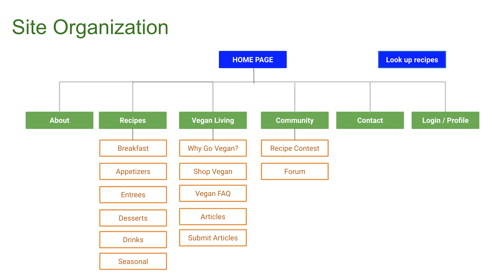

Overview
For vegans who want to learn new recipes and share their own with a community of like-minded people, VeganShare is a platform for community members to learn and share healthy and delicious recipes. Unlike allrecipes.com, our product is focused on healthy vegan meals. The goal of our website is people can join as a member, make recipes, share recipes [community forum].
Project Details:
Challenge: Create a vegan share website that provides information to members and recruiting new members.
Timeline: 8 Weeks
Role: My role is to help in user research for the vegan diet followers and work on competitor analysis of the website and focus on hierarchy of the elements of the website and creating the UI of the website.
Methods: Brainstorm with business and user, competitive analysis, User Research, User personas, User scenarios, Site map, Sketching, Wireframing, Visual design of the website [User Interface of the website], prototyping, User testing.
Tools: Zoom as a communication channel. Google docs to document our website, google slides to make a presentation of the website. Adobe photoshop, Adobe illustrator, Adobe XD, Sketch. Google drawing, pen & paper, Color sketches.
PROCESS
Brainstorm with Business:
Our project is started with brainstorming of business needs of the website. Discuss with my team, we find out user needs for the website and analyze the user needs and document the user goals for the website. Our website mainly focuses on vegan recipes for community people and how the community minded liked people share their cooking recipes and share their experience as a vegan diet follower. How the people can stay healthy with the vegan diet. How the people motivate other people to follow the vegan diet.
Elevator Pitch: “For vegans who want to learn new recipes and share their own with a community of like-minded people, VeganShare is a platform for community members to learn and share healthy and delicious recipes. Our product is focused on healthy vegan meals.”
SMART - Goals
What we found from the brainstorming process and we have noted down the SMART -Goals and business objectives for the website.
Competitive analysis:
Finalizing on the SMART goals, our process moved forward with conducting the competitive analysis for the vegan share website.

We took five websites as a competitor website. In these five websites there are some different features related to vegan recipes. Some websites focus on veganism and some websites focus on recipes and some of them focus on community based activities. After conducting the competitive analysis we have figured out the features of our website and take notes on what objects we need to add in our website or any changes made to our website.
User Research:
Our team has started to work on user research of veganshare websites. First we have worked on demographics and psychographics of the user needs. Then we have started to prepare a questionnaire for a user interview and then our team has started to conduct a user interview of two people. And we took notes on it. Also I have researched on beginner level to expert level of vegan diet follower people and really what they want to do in their real life to improve their physical fitness and staying healthy for them and their family. How veganism changed their everyday life.
You have to take a little survey about the vegan diet followers that you can know more about the vegan people and how they are following recipes in their everyday life ? Before conducting the surveys we have to find out what do you use like a list of demographics and physiography.
What did we found from the user interviews:
Creating Personas:
From the user research process, we have created four different categories of persona for the website. I have created the persona focused on a long time vegan diet follower.
Creating Scenarios from user personas:
To create a user scenario, first we figured out the user issues and needs from the created different category personas.
Scenario (Rebecca)Rebecca is going grocery shopping soon and needs to know what foods and meal ingredients she should be buying in order to fit a vegan diet. She searches for vegan ingredients and finds VeganShare. On VeganShare, she navigates to an FAQ or informational page that gives her basic information on what vegan foods/ingredients are often used in vegan recipes. If she doesn’t find all the information she needs, or has a specific question for a certain ingredient not included in that informational page, she navigates to the forum to see if someone else has had a similar question or submit a question herself. Someone responds to her and gives her the information she needs. Satisfied, she is able to go to the grocery store and shop with confidence, knowing exactly what she needs for her family’s vegan diet.
Scenario (Forest)Forest has been into a vegan lifestyle for only about 3 weeks and he is already enjoying the positive impact this change in diet has brough not only to his health, but also his mood. He has found VeganShare so useful that he wants to write a good word for them or leave a good review, he wants other users to join the good habits. Being in the business sector, he knows what this represents for businesses and is willing to do it for free! Therefore, he goes back to the site and looks for an option that leads him to accomplish this task, he then easily finds an option that guides them to leave a good review on the site and there is another one that leads him to connect with the team. He chooses to just leave the good review for other users to read.
Scenario (Naina): Naina is always taking more time to cook for the recipes so she is looking for a website where she can find out less time taking recipes. Also she is very health conscious so she is looking for the nutrition level of the food as well as recipes. She is very interested in cooking so she wants to take part in a community cooking contest and she wants to share her recipes and articles with other community people. She found a vegan share.com website where she can find her all needs. She navigates to recipes page then she can view the particular recipes, over click on the particular recipe then she can view the recipe preparation time, ingredients, preparation videos and images. She is interested in cooking and she wants to participate in a cooking contest since she navigates to community pages and she can find contest links on the page and then she can participate in contests.
Scenario (Hua Ling)Issue : find more different recipes Solution: Rorting recipes categories, uses could find the recipe they are looking for more quickly. Issue : At her age, she doesn’t want to spend more time reading the text. Recipe not only has pictures and text, preferably with video commentary. Solution : We can mark it on the recipe icon, which contains the video.
Focus Areas
Site map for the vegan share.com
Label of the website:Tone of voice: humor, formality, respectfulness-serious but fun, and enthusiasm-inviting : - Healthy” , “Benefits”, “Discover”, “Mindful”, “Health conscious”, “Plant based meals”, “Lifestyle”, “Wellness”, “Alternatives”
Sketching & Wireframe for the website:
Sketching: We have started to sketch the flow of the vegan share website. Our team members have created an individual sketch for the user flow. After creating the sketch we all members communicated and finalized the best flow of the website. Also we have finalized the navigation flow and hierarchy of the elements of the website and we finalize the label of the website which is focused on the importance of the website.

Wireframing:We have finalized our sketch of the website and hierarchy of the elements of all the website pages and then we have started to create the wire-flow of the website and then we make changes as per the wireflow of the website and finally create the wire-frame of the website. I have worked on the basic content and focus content of our website. Then finalize with our team members.
What we found from wire-framing:
User-testing:
For the user testing we have conducted in person user testing with two peoples. For the user testing we have explained the purpose of our website and focus area of the website and basic tasks to perform in the website and also we have made questionnaires for the user test. We tested our navigation of the website and user flow of the test and noted down the points about where the user is getting hard to navigate and hard to find the expected content on the page.
We found things with user testing:
Visual representation of the veganshare.com:
For the visual representation of the website. We have chosen the color palette and typography for the website and then we use the adobe XD to create the complete website and create a clickable prototype for the website. Before creating the website, I have started to create a logo for the website using the illustrator.


Learnings:
I have learned about the vegan diet website is all about the complete focus on vegan people community minded website. Working on this project, researching on the competitor websites as well on the different food priority people and their requirements are the most useful factors in our website and how the people can change their perspective of food and getting influenced by vegan diet using our website. The people used to get knowledgeable learning from vegan share website as well as explore new ways of living things after joining in the vegan community and they became a choice of a vegan diet follower. People can participate in recipes contests, share and post recipes using our community website.